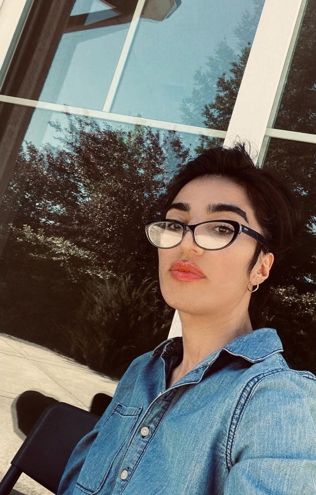

|  |
|
Maryam Khazaei
Ph.D. student
Electrical Engineering and Computer Science
School of Engineering
University of California, Merced
5200 N. Lake Road
Merced, CA 95343
Email: mkhazaeipool [at] ucmerced.edu
Social: [ LinkedIn]
|
Looking for a summer internships in Software Engineering, Algorithms, Robotics, Machine Learning and Optimization.
Research interests
My research focuses on Robotic, Algorithms and Path Optimization. In particular:
- Finding Max number of lanes in continuous envioronments for Multi Agents by using Max Flow Algorithm.
About
I am a third year PhD student at University of California, Merced.
I started my PHD in Computer Engineering from Summer 2019 at UC Merced supervised by Professor Marcelo Kallmann.
I have received my MSc in Applied Mathematics from University of Colorado Denver, in June 2018.
Employments
- Graduate Teaching Assistant | University of California, Merced | 2018 - Present
- Recitation Instructor and Graduate Teaching Assistant | University of Colorado Denver and Merc Lab - UC Denver| Aug 2016 - 2018
- Budget Analyst in Caspian Management Company (Arraycode), Iran, 2014-2015
Honors and awards
- Outstanding Teaching Award, University of California Merced, May 2021
- Outstanding Undergraduate Student Award, BSC, Iran University of Science & Technology, 2009-2011
- The Academic Excellence Award, Iran University of Science & Technology - Ranked 2nd among all undergraduate students
in Applied Mathematics Department, 2009-2011
- Graduate Teaching Assistantship Scholarship, University of California Merced, 2019-2024
- National Science Foundation (NSF) Teaching Fellowship, University of Colorado Denver, Fall 2016- Fall 2017
- Ranked No.1 at Inter-Provincial Mathematics Talent Competition, 2008- Iran
Course & Projects
- Multi-Robot Path Optimization "Path Smoothing with Deterministic Shortcuts", Jun 2021 - March 2022, UC Merced
We generate and develop algorithms using RRT-based path planning application to optimize lanes for Multi-Robots in terms of smoothing and
shortening lanes/paths which is going to be collision free. Some of these algorithms that are generated include Corner smoothing Method,
Max Sub-Path Method, Max Shortcut Method, Max- Radius Method, Subdivision Method.
- Lane Systems of Max lows, Application: Controlling and Management of Traffic Flow, May 2020-Spring 2021, UC Merced
In this project we focus on the problem of planning lane systems to be used by agents moving from a source polygonal entrance
to a sink polygonal exit. Our proposed method addresses lane systems that 1) are collision-free among planar polygonal obstacles,
2) maintain a given clearance from other lanes and obstacles, and 3) are of maximum flow
- Modeling a Hierarchical Object | UC Merced-Fall 2019 | Course Project (Computer Graphic)
Implement Modeling a Hierarchical Object includes 5 parts interconnected by joints produce movements in 3 dimensions with two types of global and joint motion.
tools - CPP, Open GL
- Animating a Hierarchical Object | UC Merced-Fall 2019 | Course Project (Computer Graphic)
Implement Modeling and Animating a Hierarchical Object with camera fly-through.
tools - CPP, Open GL
- Baseball Elimination Project | UC Merced-Fall 2019 | Course Project (Advance Algorithm)
Find which teams have a chance to win Baseball league using MaxFlow Mincut Algorithm
tools - CPP
- Min Spanning Tree (Kruskal, Prim’s algorithm, Dijkstra's Algorithm and Boruvka algorithm) | UC Denver-Spring 2018 | Course Project (Network Flow)
Applications: Reducing data storage in sequencing amino acids in a protein and Network design (communication, electrical, hydraulic, computer, road).
- Master Thesis-UC Denver: Numerical solution of two-dimensional coupled viscous Burgers equation using modified cubic B-spline differential quadrature method
- The Spline Collocation Method for Solution of The Linear Seventh Order Boundary Value Problems, IUST, 2013
Skills
- Technical: C++, Java, R, Python, Matlab, HTML and C, LATEX (XEPERTIEAN), Math Type, Open Graphics Library -Sig Library
Publications
- Published || Maryam Khazaei Pool, Jalil Rashidinia and Hassan Nikmarvani, "Spline collocation method for solution of higher order linear boundary value
problems” Accepted at the TWMS J. Pure Applied Math (TWMS J. Pure Appl. Math., V.6, N.1, 2015, pp.38-47)
- Published || Maryam Khazaei, and Yeganeh Karamipour, "Numerical Solution of The Seventh Order Boundary Value Problems using B-Spline Method,
Journal of Applied Mathematics and Physics, December 10, 2021
Submitted || Maryam Khazaei, and Lori Lwis, "A Survey on Recent Higher Order Spline Techniques for Solving Burgers Equation using B-Spline
methods and Variation of B-Spline Techniques", Journal of Mathematical Sciences: Advances and Applications, 2022
Volunteer/ Professional Activities
- Student Representative - Electrical Engineering and Computer Science Department, University of California, Merced, May 2021- May 2022
- Reviewer, WAFR 2022, Workshop on the Algorithmic Foundations of Robotics, Oulu, Finland, March 2022
- Reviewer, Journal of Applied Mathematics and Physics, March 2022
- Reviewer, 33rd International Conference on Computer Animation and Social Agents CASA), UK, Spring 2020
- Riviewer, The 20th annual Symposium on Computer Animation (SCA) - California - United States, June 2021
- Member of Graduate Student Panel in CAHSI, University of California, Merced, April 2021
Leadership Experience / Organizations
- Graduate Student Association- UC Merced, Delegate Assembly member, May 2020 – Present
- University of California Merced, EECS Department, Electrical Engineering and Computer Science Representative, May 2021 – Present
- National Society of Professional Engineers (NSPE ) – Membership, Feb 2021
- Association for Women in Mathematics, AWM Student Chapter Membership and Membership, May 2021 - Present
- Society of Women Engineers (SWE) - Membership, Feb 2021
- Member,Young Researchers Club, (www.bpj.ir), Fall 2010-2011
Licenses & Certifications
- Machine Learning Onramp, Issuing authority: MathWorks
- Deep Learning Onramp, Issuing authority: MathWorks
- Applied Machine Learning: Foundations by Derek Jedamski, Issuing authority: Linkedin
- Machine Learning and AI Foundations: Value Estimations by Doug Rose, Issuing authority: Linkedin
- Applied Machine Learning: Algorithms by Derek Jedamski, Issuing authority: Linkedin
- NLP with Python for Machine Learning Essential Training, Issuing authority: Linkedin
- SQL Server Machine Learning Services: Python by Adam Wilbert, Issuing authority: Linkedin
- Accounting Foundations, Economic Analysis and Data Analytics, and Finance and Accounting Tips
- Financial Analysis: Making Business Projections, and Managerial Economics
Extracurricular/Hobbies
- Playing Football, Golf, Reading Novels and Mountain Climbing
Last updated: 10:31 pm PDT Sunday, September 13, 2020